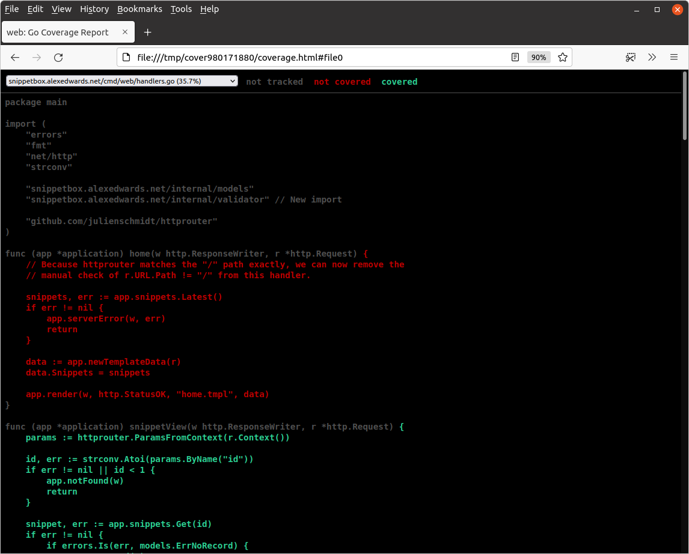
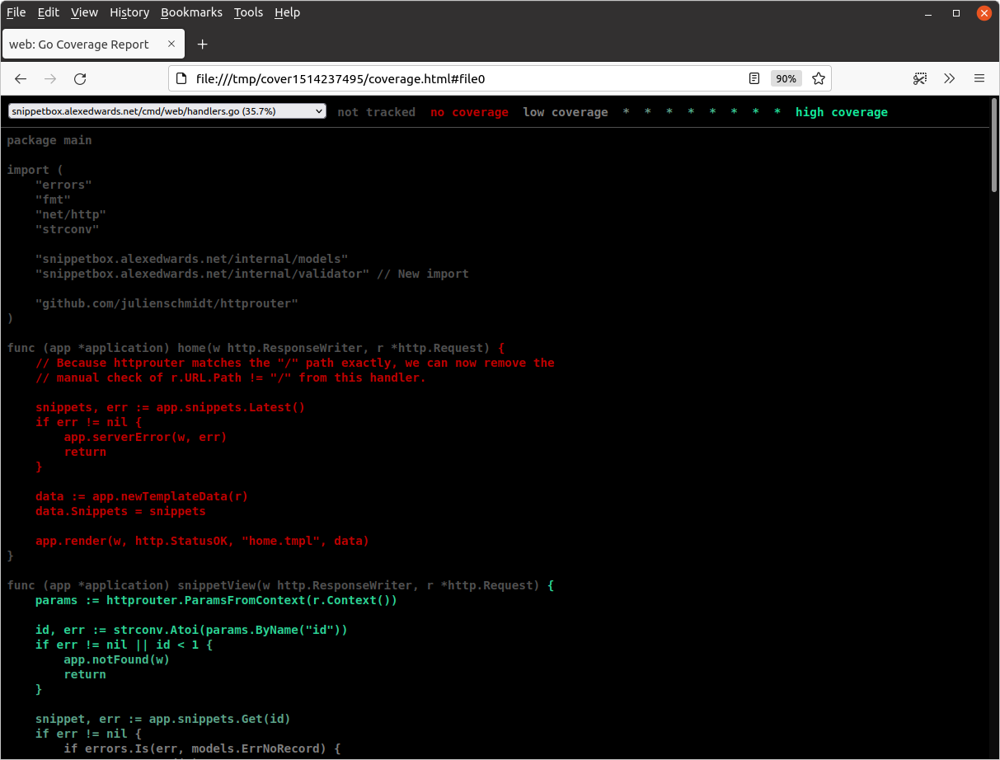

پروفایلینگ پوشش تست
یک ویژگی عالی ابزار go test، معیارها و تجسمهایی است که برای پوشش تست ارائه میدهد.
پیش بروید و سعی کنید تستهای پروژه خود را با استفاده از flag -cover به این شکل اجرا کنید:
$ go test -cover ./...
? snippetbox.alexedwards.net/ui [no test files]
ok snippetbox.alexedwards.net/cmd/web 0.013s coverage: 45.7% of statements
snippetbox.alexedwards.net/internal/models/mocks coverage: 0.0% of statements
snippetbox.alexedwards.net/internal/validator coverage: 0.0% of statements
snippetbox.alexedwards.net/internal/assert coverage: 0.0% of statements
ok snippetbox.alexedwards.net/internal/models 0.128s coverage: 11.3% of statements
از نتایج اینجا میبینیم که 46.9% از statementهای package cmd/web ما در طول تستهای ما اجرا میشوند، و برای package internal/models این رقم 11.3% است.
میتوانیم یک تجزیه دقیقتر از پوشش تست بر اساس متد و تابع با استفاده از flag -coverprofile به این شکل به دست آوریم:
$ go test -coverprofile=/tmp/profile.out ./...
این تستهای شما را به طور عادی اجرا میکند و — اگر همه تستهای شما پاس شوند — سپس یک پروفایل پوشش را در یک مکان خاص مینویسد. در مثال بالا، به آن دستور دادهایم که پروفایل را در /tmp/profile.out بنویسد.
سپس میتوانید پروفایل پوشش را با استفاده از دستور go tool cover به این شکل مشاهده کنید:
$ go tool cover -func=/tmp/profile.out snippetbox.alexedwards.net/cmd/web/handlers.go:15: home 0.0% snippetbox.alexedwards.net/cmd/web/handlers.go:31: snippetView 92.9% snippetbox.alexedwards.net/cmd/web/handlers.go:62: snippetCreate 0.0% snippetbox.alexedwards.net/cmd/web/handlers.go:88: snippetCreatePost 0.0% snippetbox.alexedwards.net/cmd/web/handlers.go:131: userSignup 100.0% snippetbox.alexedwards.net/cmd/web/handlers.go:137: userSignupPost 88.5% snippetbox.alexedwards.net/cmd/web/handlers.go:192: userLogin 0.0% snippetbox.alexedwards.net/cmd/web/handlers.go:198: userLoginPost 0.0% snippetbox.alexedwards.net/cmd/web/handlers.go:256: userLogoutPost 0.0% snippetbox.alexedwards.net/cmd/web/handlers.go:277: ping 100.0% snippetbox.alexedwards.net/cmd/web/helpers.go:17: serverError 0.0% snippetbox.alexedwards.net/cmd/web/helpers.go:30: clientError 100.0% snippetbox.alexedwards.net/cmd/web/helpers.go:37: notFound 100.0% snippetbox.alexedwards.net/cmd/web/helpers.go:41: render 58.3% snippetbox.alexedwards.net/cmd/web/helpers.go:62: newTemplateData 100.0% snippetbox.alexedwards.net/cmd/web/helpers.go:73: decodePostForm 50.0% snippetbox.alexedwards.net/cmd/web/helpers.go:102: isAuthenticated 75.0% snippetbox.alexedwards.net/cmd/web/main.go:35: main 0.0% snippetbox.alexedwards.net/cmd/web/main.go:100: openDB 0.0% snippetbox.alexedwards.net/cmd/web/middleware.go:11: commonHeaders 100.0% snippetbox.alexedwards.net/cmd/web/middleware.go:26: logRequest 100.0% snippetbox.alexedwards.net/cmd/web/middleware.go:41: recoverPanic 66.7% snippetbox.alexedwards.net/cmd/web/middleware.go:61: requireAuthentication 16.7% snippetbox.alexedwards.net/cmd/web/middleware.go:83: noSurf 100.0% snippetbox.alexedwards.net/cmd/web/middleware.go:94: authenticate 38.5% snippetbox.alexedwards.net/cmd/web/routes.go:12: routes 100.0% snippetbox.alexedwards.net/cmd/web/templates.go:23: humanDate 100.0% snippetbox.alexedwards.net/cmd/web/templates.go:40: newTemplateCache 83.3% snippetbox.alexedwards.net/internal/models/snippets.go:31: Insert 0.0% snippetbox.alexedwards.net/internal/models/snippets.go:60: Get 0.0% snippetbox.alexedwards.net/internal/models/snippets.go:97: Latest 0.0% snippetbox.alexedwards.net/internal/models/users.go:34: Insert 0.0% snippetbox.alexedwards.net/internal/models/users.go:66: Authenticate 0.0% snippetbox.alexedwards.net/internal/models/users.go:98: Exists 100.0% total: (statements) 38.1%
یک راه جایگزین و بصریتر برای مشاهده پروفایل پوشش، استفاده از flag -html به جای -func است.
$ go tool cover -html=/tmp/profile.out
این یک پنجره مرورگر حاوی یک نمایش قابل پیمایش و برجسته از کد شما باز میکند، مشابه این:

Statementهایی که در طول تستهای شما اجرا میشوند به رنگ سبز و آنهایی که اجرا نمیشوند به رنگ قرمز رنگآمیزی میشوند. این دیدن دقیق کدی که در حال حاضر توسط تستهای شما پوشش داده شده است را آسان میکند (مگر اینکه کوررنگی قرمز-سبز داشته باشید).
میتوانید این را یک قدم جلوتر ببرید و از گزینه -covermode=count هنگام اجرای go test به این شکل استفاده کنید:
$ go test -covermode=count -coverprofile=/tmp/profile.out ./... $ go tool cover -html=/tmp/profile.out
به جای اینکه فقط statementها را به رنگ سبز و قرمز برجسته کند، استفاده از -covermode=count باعث میشود پروفایل پوشش تعداد دقیق دفعات اجرای هر statement را در طول تستها ثبت کند.
هنگام مشاهده در مرورگر، statementهایی که بیشتر اجرا میشوند سپس در سایه سبز اشباعشدهتری نمایش داده میشوند، مشابه این:
